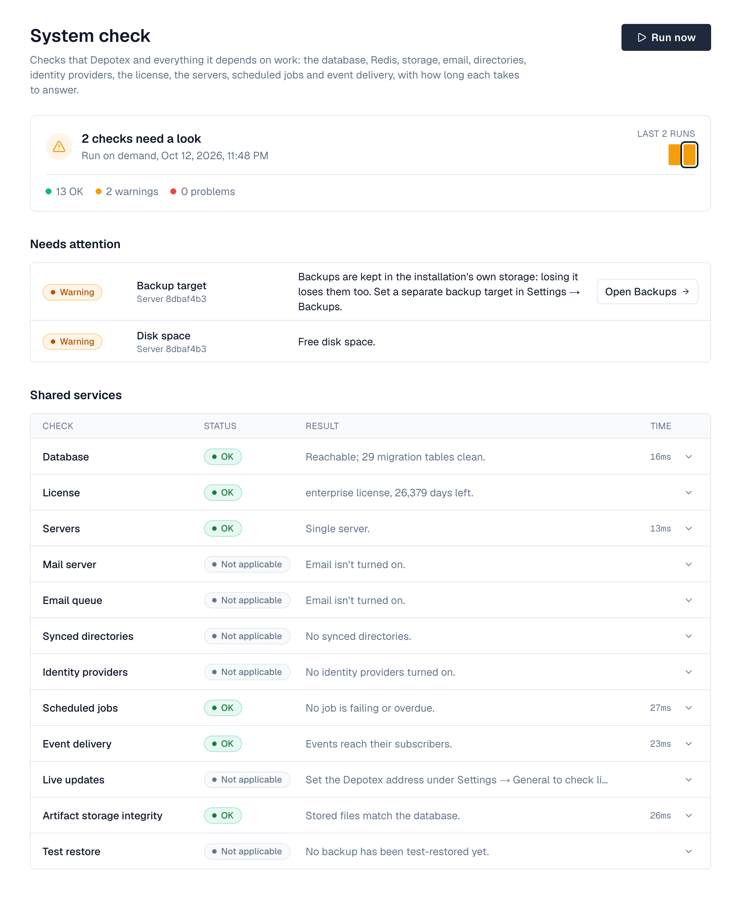

1. Overview
The system check tests that Depotex and everything it depends on work, and how long each answers: the database, Redis, file storage, the mail server, synced directories, identity providers, the license, every server of a cluster, scheduled jobs and the delivery of events to policies, automation and plugins. It runs every hour and whenever you select Run now, and tells administrators when something gets worse or recovers. Pro license or higher; the settings:write permission (super admins).

Open it under Settings → Advanced → System check. The top of the page shows the overall result of the run (all checks pass, how many need a look, or how many problems) with its time and how many checks are OK, warnings and problems. Beside it, a strip of bars shows the last 12 runs, oldest to newest: short and green when everything passed, tall and amber or red when something didn't. Select a bar to see that run, and Back to the latest run to return.
Needs attention lists every warning and problem first, problems on top, with where it happened (shared services or a server) and a button to the settings that fix it, such as Open Email settings. Shared services lists the checks made once for the whole installation; select a row for its details. Each server shows the checks every server makes side by side, one column per server; select a cell for that server's details. While a run is in progress, servers that haven't reported yet show Running.
2. What is checked
| Check | Warning | Problem |
|---|---|---|
| Database | Slow to answer | Unreachable, or a migration stopped half way |
| License | Expires within 30 days, 90 % of seats used, or in the grace period | Expired, invalid or missing |
| Servers | A server stopped or stopped reporting, or servers run different versions | |
| Redis (each server) | Slow | Unreachable from that server |
| File storage (each server) | Slow | Can't write or read back a test file |
| Artifact storage integrity | Broken files, or the last integrity check failed, was skipped or is over a week old | — |
| Backup target (each server) | Backups are kept in the installation's own storage (see Backups) | The backup target can't be reached, its marker is wrong, or a test file can't be written and read back |
| Test restores | The last test restore failed, or none passed in 15 days (Enterprise) | |
| Shared storage (each server) | Not checked yet | The server's storage doesn't hold this installation's storage ID: not the cluster's shared storage, or another installation's (see Storage) |
| Disk space (each server) | Less than 15 % free where logs are written | Less than 5 % free |
| Mail server | Slow | Can't connect, secure the connection or sign in (nothing is sent) |
| Email queue | Messages failed in the last 24 hours | Most messages failed |
| Synced directories | The last sync failed or was blocked | A directory can't be reached or read |
| Identity providers | A SAML signing certificate expires within 30 days | Discovery or metadata can't be read, or the certificate expired |
| Scheduled jobs | A job's last run failed or it's overdue | A job failed three times in a row |
| Event delivery | Deliveries late or failed for good in the last 24 hours | More than 100 deliveries late |
| Audit log (each server) | Entries waiting to be written | Entries were lost |
| Log file (each server) | The log file can't be written | |
| Live updates | Browsers can't open live updates through the Depotex address: the reverse proxy doesn't route /api/ws to the backend (alerts then refresh every 30 seconds). See Getting Started → Behind a proxy | |
| Secure cookies (each server) | AUTH_COOKIE_SECURE=false while Depotex is reached at an address other than localhost, so session cookies could travel over plain HTTP. Serve Depotex over HTTPS (or terminate TLS in a reverse proxy in front of it) and remove the setting |
A check that doesn't answer within its time limit (usually 20 seconds) counts as a problem. A server that doesn't report within five minutes is marked as not reporting.
3. Notifications
Under Notifications at the bottom of the page, choose an in-app alert and/or email (email must be set up), for super admins and/or organization admins (with a notification on, choose at least one), then Save in the bar that appears at the bottom. You're told when a check gets worse than in the previous run, and once when everything is OK again; an unchanged problem doesn't notify every hour. Each run raises system.check.completed and each change system.check.changed, so automation can also send a webhook to your chat or paging tool.
- Run it once — Open Settings → Advanced → System check and select Run now. Results appear within seconds; other servers add theirs within a minute.
- Fix what's red — Open Details for the error, fix the cause (for example the mail password), and run again.
- Choose notifications — Tick In-app alert and/or Email and the roles, then Save.
- Adjust the schedule (optional) — Change the system-check job under Settings → Advanced → Scheduled jobs, or set SYSTEM_CHECK_INTERVAL.
Runs are kept for 30 days. The check never sends email, syncs directories or changes data; it only connects, signs in and reads.
4. Cluster health
Besides the hourly run, every server checks itself every minute and reports to the others, and once a minute Depotex decides one health status for the whole installation. This tells you within a couple of minutes that a server has a problem, and which one. Pro license or higher; it works the same with one server or many.
See it under Settings → Clustering (permission cluster:read). Cluster health at the top shows the status (Healthy, Warnings or Problems), when it was last checked, and the first five things that need attention, each with the server it's on. Select View server to open that server's row. The table's Health column shows each server's own status (No report when it hasn't reported for three minutes), and a server's details list every check of its latest report, problems first, with a button to the settings that fix it and a link to the full system check.
| Cluster health looks at | Warning | Problem |
|---|---|---|
| Each server's own checks (Redis, file storage, shared storage, disk space, audit log, log file, secure cookies) | A check warns | A check fails |
| Health reports | A server hasn't reported for three minutes | |
| Heartbeats | A server's heartbeat is more than two minutes old, or a server stopped | |
| Versions and leader | Servers run different versions, or no server is the leader | |
| License | More servers are active than the license allows | |
| Redis | Redis can't be reached, so reports are read from the database |
Storage checks run every five minutes, the others every minute. The checks of shared services (mail, identity providers, directories, jobs, events) stay in the hourly system check.
Notifications use the same choices as the system check (Notifications on this page: in-app alert and/or email, and the roles). You're told once when the status changes and has held for two minutes: to Warnings, to Problems, or back to Healthy. A new alert replaces the previous one. A problem moving to another server while the status stays the same doesn't notify again. Each change raises cluster.health.changed.
When Redis is down the reports are read from the database, so cluster health keeps working and shows a warning about Redis.
5. Configuration
| Variable | Default | What it does |
|---|---|---|
| SYSTEM_CHECK_INTERVAL | 1h | How often the scheduled check runs |
The cluster health jobs (node-health-report on every server, cluster-health once per cluster) run every minute; cluster-health can be turned off under Settings → Advanced → Scheduled jobs.
6. Events
system.check.completed (every run: status and counts), system.check.changed (what got worse or recovered), cluster.health.changed (the cluster health status changed and held for two minutes: the new and previous status and what needs attention) and system_check.settings.update (notification settings; can be blocked by subscribers). See Events.